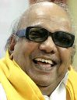

–
– 13 May 2001
Constituency Chepauk
In office
27 January 1989 – 30 January 1991
Preceded by Janaki Ramachandran
Succeeded by Jayalalithaa
Constituency Harbour
In office
15 March 1971 – 31 January 1976
Preceded by President's rule
Succeeded by President's rule
Constituency Saidapet
In office
10 February 1969 – 4 January 1971
Preceded by V. R. Nedunchezhiyan (acting)
Succeeded by President's rule
Constituency Saidapet
Personal details
Born 3 June 1924 (age 91)
Thirukuvalai, Madras Presidency, British India
Nationality Indian
Political party Dravida Munnetra Kazhagam
Spouse(s) Padmavathi (deceased)
Dayalu
Rajathi
Children M. K. Muthu
M. K. Alagiri
M. K. Stalin
M. K. Tamilarasu
M. K. Selvi
Kanimozhi
Residence Chennai, Tamil Nadu, India
|
3rd Chief Minister of Tamil Nadu
|
|
In office
|
|
13 May 2006
| 15 May 2011 | |
|
Preceded by | Jayalalithaa |
| Succeeded by | Jayalalithaa |
| Constituency | Chepauk |
|
In office
|
|
13 May 1996 |